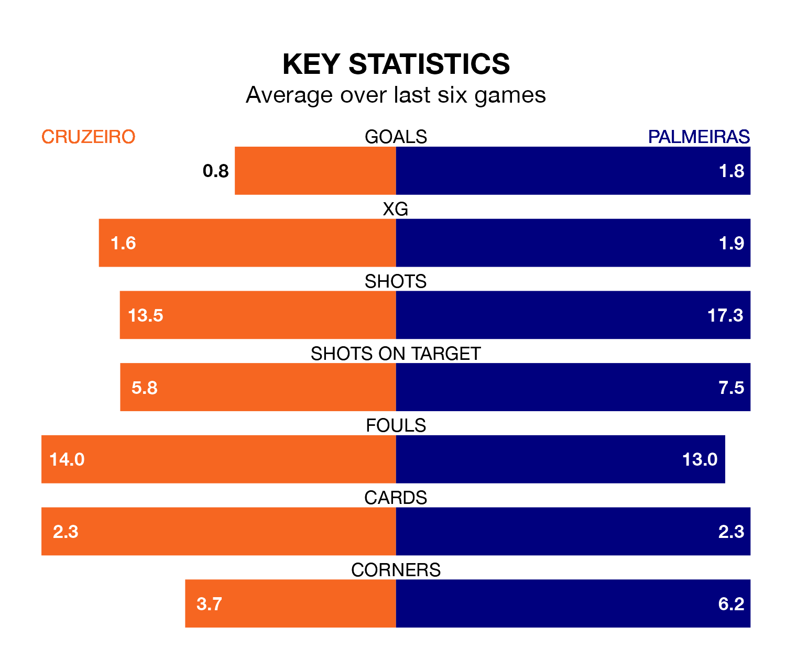

Two of Serie A's meanest defences go head-to-head at the Estádio Governador Magalhães Pinto on Thursday, when Cruzeiro host Palmeiras.
Only one side – Atlético Mineiro – has conceded fewer goals than Cruzeiro to date: the home side have let in just 31 goals in 37 games.
Palmeiras have conceded 32 goals in 37 games, giving them the third tightest back line so far this season.
Key to Cruzeiro's home form has been Rafael Cabral Barbosa, who has allowed 0.78 goals past him per 90 minutes, compared to 0.85 for Weverton Pereira da Silva in the opposite net.
Palmeiras are top of the table after 37 games, of which they have won 20 and drawn nine, earning 69 points.
Cruzeiro are 13 places behind the away team in 14th, with 11 wins and 13 draws putting them on 46 points.
The hosts are in mixed form in Serie A, with two wins and three draws from their last six games.
With four wins and a draw over that period, Palmeiras' form is better – they have taken 13 points from 18, compared to Cruzeiro's nine.
Cruzeiro's last match was on Sunday, a 0-0 draw against Botafogo.
Palmeiras beat Fluminense 1-0 last time out, also on Sunday, with Breno Lopes on the scoresheet.
